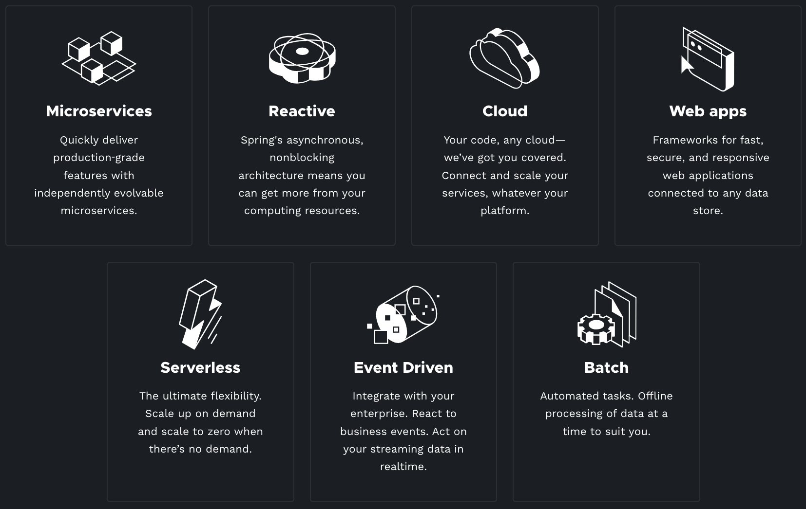
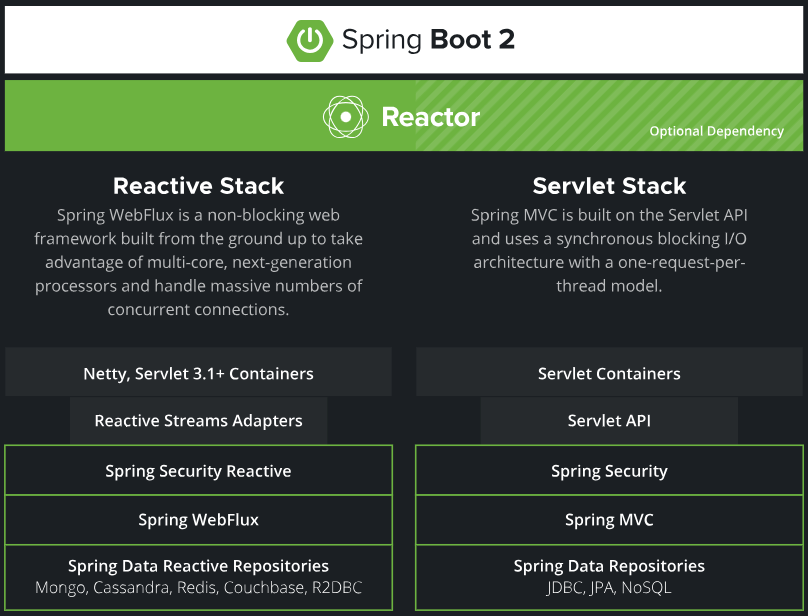
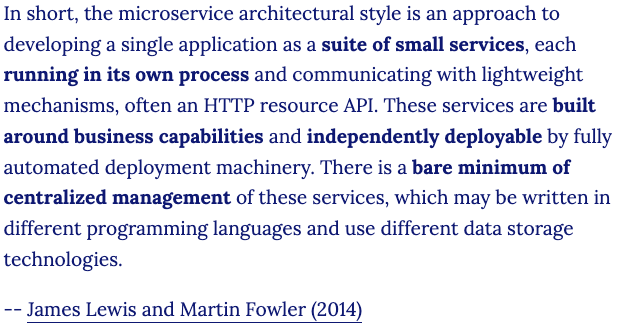
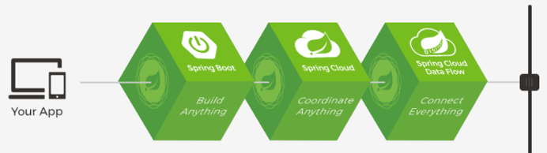
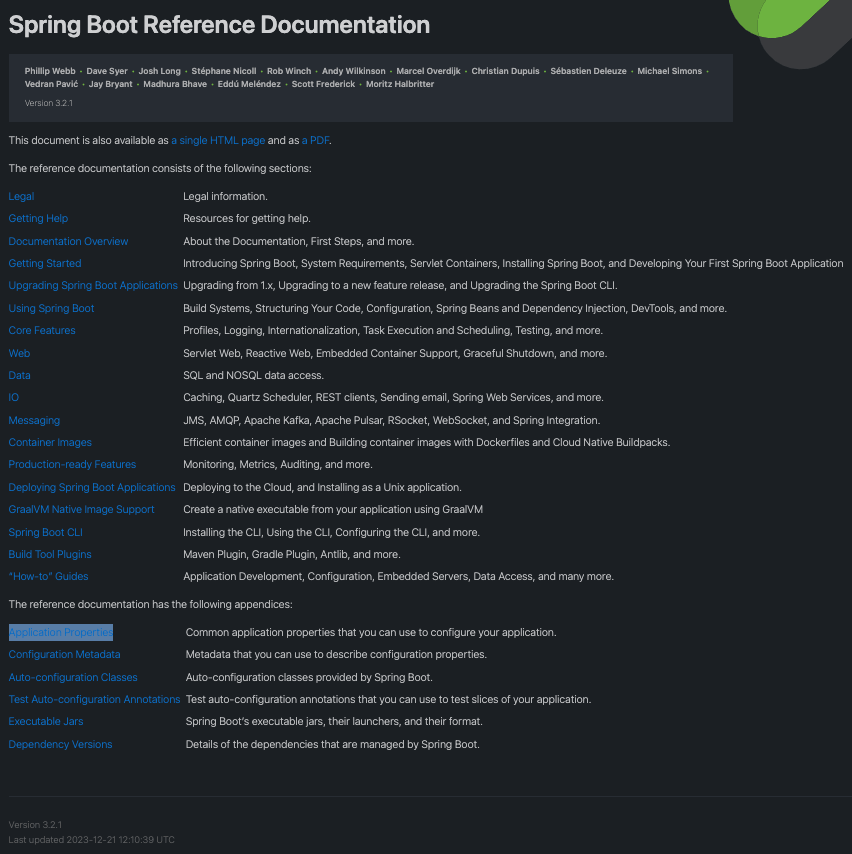

1. Spring与SpringBoot
- 23.12.23 20:55开始
- 23.12.23 23:17更新
- 23.12.24 22:50更新
1.1. Spring的能力

- Microservices（微服务）：一个项目功能模块很多，将每一个功能模块拆解成一个微小的服务，独立运行。
- Reactive（响应式编程）：构建异步数据流，占用少量的线程，少量cpu及内存资源，构建高吞吐量的应用。
- Cloud（分布式云开发）
- Web apps（Web应用）：SpringMVC
- Serverless（无服务开发）：函数式服务，无需购买服务器。
- Event Driver（事件驱动）：实时数据流。
- Batch：批处理。
1.2. Spring生态圈
https://spring.io/projects/spring-boot/
- Spring Framework（Web开发）
- Spring Data（数据访问）
- Spring Security（安全控制）
- Spring Cloud(分布式)
- Spring Session(分布式Session的存储问题)
- Spring AMQP（消息队列）
- Spring Mobile（移动开发）
- Spring Batch（批处理）
- Spring Android
- Spring Shell
- ......
1.3. Spring5升级

- 内部源码设计：基于Java8的一些新特性，如：接口默认实现，重新设计源码架构。
接口默认实现：不在需要使用适配器模式。
1.4. 什么是SpringBoot
- SpringBoot是整合Spring技术栈的一站式框架。
- SpringBoot是简化Spring技术栈的快速开发脚手架。
1.5. SpringBoot要求
- Java8及以上。
- Maven3.3及以上。
1.6. 为什么用SpringBoot
Spring Boot makes it easy to create stand-alone, production-grade Spring based Applications that you can "just run".
能快速创建出生产级别的Spring应用
1.7. SpringBoot优点
- Create stand-alone Spring applications
- 创建独立Spring应用
- Embed Tomcat, Jetty or Undertow directly (no need to deploy WAR files)
- 内嵌web服务器
- Provide opinionated 'starter' dependencies to simplify your build configuration
- 自动starter依赖，简化构建配置
- Automatically configure Spring and 3rd party libraries whenever possible
- 自动配置Spring以及第三方功能
- Provide production-ready features such as metrics, health checks, and externalized configuration
- 提供生产级别的监控、健康检查及外部化配置
- Absolutely no code generation and no requirement for XML configuration
- 无代码生成、无需编写XML
1.8. SpringBoot缺点
- 人称版本帝，迭代快，需要时刻关注变化
- 封装太深，内部原理复杂，不容易精通
1.9. 微服务
https://martinfowler.com/microservices/

- 微服务是一种架构风格
- 一个应用拆分为一组小型服务
- 每个服务运行在自己的进程内，也就是可独立部署和升级
- 服务之间使用轻量级HTTP交互
- 服务围绕业务功能拆分
- 可以由全自动部署机制独立部署
- 去中心化，服务自治。服务可以使用不同的语言、不同的存储技术
1.10. 分布式
1.10.1. 分布式的困难
- 远程调用：Http方式
- 服务发现：找到服务可用的机器
- 负载均衡
- 服务容错：A服务调用B服务失败，如何处理。
- 配置管理：建立配置中心，相同服务去配置中心更新。
- 服务监控：对服务健康状况的监测。
- 链路追踪：服务A调B服务，B服务调用C服务，C服务出现问题，如何排查。
- 日志管理
- 任务调度：服务A有个定时任务，所有机器怎么同步，并发还是串行。
- ......
1.10.2. 分布式的解决
SpringBoot + SpringCloud

1.11. 云原生
原生应用如何上云。 Cloud Native
1.11.1. 上云的困难
- 服务自愈：服务A的一台机器挂了，自动拉起一台新机器，部署服务A。
- 弹性伸缩：流量高峰自动增加服务部署，流量低峰家少服务器部署。
- 服务隔离：一台机器同时部署了服务A、B、C，A服务挂了，不影响其他服务。
- 自动化部署
- 灰度发布：更新服务只更新其中一台机器，其他机器的服务依然保持旧版本，经过时间验证，更新的服务没有问题，在全部更新。
- 流量治理：机器A性能不好，让A负载低一些。
- ......
1.11.2. 上云的解决
- 初识云原生
- 深入Docker-容器化技术
- 掌握星际容器编排Kubernetes
- DevOps-实战企业CI/CD，构建企业云平台
- 拥抱新一代架构Service Mesh与Serverless
- 云上架构与场景方案实战
1.12. 如何学习SpringBoot
- 进入官网：https://spring.io/projects/spring-boot/
- 点击
LEARN，CURRENT当前版本，xxx-SNAPSHOT快照版本，RELEASE已发布。 - 点击
Reference Doc.

- Documentation Overview（文档）
- Getting Started（入门）
- Using Spring Boot（使用Spring Boot）
- Core Features（核心特性）
查看版本更新日志：https://github.com/spring-projects/spring-boot/wiki#release-notes